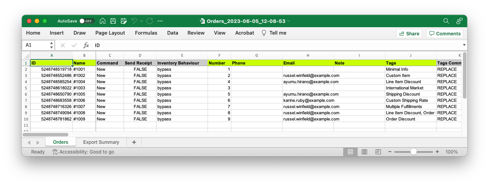

Documentation for ablestar-cli
ablestar-cli is a command-line tool written in Node that lets you quickly import and export data from your Shopify store. To exports and imports can either be configured with options from the command line or you can use the interactive wizard to configure your job.
To get started you will need to:
Generate API credentials in the Shopify admin
Configure
ablestar-cliwith your credentials
Contents
Demo
This will produce an Excel file that looks like this:
{kind=link}
Source Code
The source code for ablestar-cli is available on Github at https://github.com/ablestar/ablestar-cli.
About Ablestar
Ablestar is a trusted Shopify app developer, specializing in creating highly-rated apps since 2016. With tens of thousands of stores using their apps, Ablestar is known for their top-ranked Bulk Product Editor app and their commitment to helping businesses save time, streamline operations, and increase sales.
You can keep yourself informed on updates to ablestar-cli through our mailing list